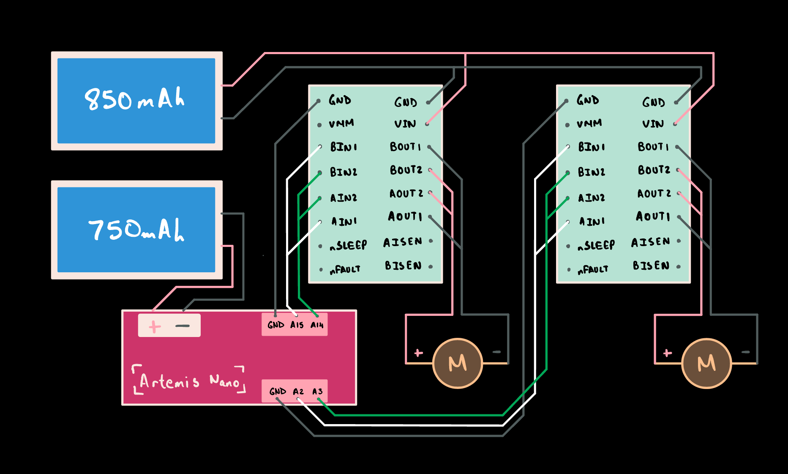

Prelab
Wiring Plan
Each motor is driven by a dedicated DRV8833 dual motor driver with both channels parallel-coupled. On each driver, AIN1 is tied to BIN1 and AIN2 is tied to BIN2 on the input side, while AOUT1 is tied to BOUT1 and AOUT2 is tied to BOUT2 on the output side. A single DRV8833 has two independent H-bridge channels rated at ~1.5A each; by combining both channels to drive one motor, the driver can supply up to ~3A without overheating the chip. This is safe because both channels share the same IC and internal clock, so their switching is perfectly synchronized. Doing this with two separate driver chips would risk shoot-through current from slight timing differences.
The motor drivers require PWM-capable pins for speed control via analogWrite(). Not all pins on the Artemis Nano support PWM output, so pin selection was constrained by this requirement. With GPIO pins 5 and 6 already occupied by ToF XSHUT lines (which only need basic digital I/O), the motor drivers were assigned to pins A2/A3 (right motor) and A14/A15 (left motor). These are on opposite sides of the board, keeping wiring clean inside the chassis.

Battery Discussion
The motors are powered by an 850mAh LiPo connected directly to both motor drivers, while the Artemis runs off a separate 750mAh LiPo. The higher-capacity battery goes to the motors because they draw significantly more current, while the microcontroller's milliamp-level consumption is easily handled by the smaller cell.
Separating the power sources is critical for several reasons:
- Brownout protection: Large motor current spikes cause voltage sags that can reset the Artemis mid-operation.
- Noise isolation: DC motors generate high-frequency electromagnetic noise from brush arcing, which couples into nearby signal lines and corrupts sensor readings or drops BLE connections.
- Battery longevity: Decoupling the supplies means the Artemis battery barely drains during a session while the motor battery handles all the heavy lifting.
Lab Tasks
Power Supply & Oscilloscope
Rather than testing each component in isolation, I soldered one motor driver fully integrated into the car and left the second driver unsoldered as a fallback in case anything went wrong. The battery terminal was split and soldered to feed both drivers. With one side fully wired, the car was brought to the lab bench for power supply and oscilloscope testing.
The external supply was set to 3.7V with a 2A current limit. The voltage matches the LiPo nominal voltage for realistic testing, and the current limit protects against accidental shorts or stalls during debugging.

To verify that analogWrite() on the Artemis correctly drives the motor controller, the oscilloscope was hooked up to pin A14 and GND. Three different PWM values were tested with 2-second intervals:
setMotorA(64); // ~25% duty cycle
delay(2000);
setMotorA(128); // ~50% duty cycle
delay(2000);
setMotorA(200); // ~78% duty cycle
delay(2000);
stopMotors();The oscilloscope video shows three distinct duty cycles at the motor driver output, confirming the full signal chain works: Artemis PWM to driver input to amplified output at supply voltage.
Single Motor Test
With the motor connected to the driver and the car on its side (wheels elevated), both directions were tested:
// Forward direction
setMotorA(100);
delay(2000);
brakeMotors();
delay(500);
// Reverse direction
setMotorA(-100);
delay(2000);
brakeMotors();stopMotors()) lets the motor coast, with the wheels spinning down gradually. Setting both pins HIGH (brakeMotors()) shorts the motor terminals through the H-bridge, causing back-EMF to actively resist rotation. Braking is significantly snappier and more predictable, which matters for precise open-loop maneuvers.Both Motors & Battery Power
After confirming the first motor worked, the second motor driver was soldered in and connected to pins A2/A3. The external power supply was swapped out for the 850mAh battery, and both motors were tested simultaneously. The turning videos below demonstrate both wheels spinning in opposite directions under battery power:
Car Assembly
The factory control PCB was removed by desoldering the motor leads and battery connector, preserving the full wire length for reuse. Chassis LEDs were disconnected. All components were secured inside the car with double-sided tape, including the batteries and Artemis board. Nothing protrudes beyond the wheel line so the car can safely flip.

The IMU was positioned away from the motor drivers to minimize electromagnetic interference on the accelerometer and gyroscope readings. Motor wires were twisted in pairs to reduce radiated EMI and kept short for both noise and packaging reasons. All connections to the motor drivers were directly soldered rather than jumpered, as the vibrations and accelerations during driving would shake loose any friction-fit connections.
BLE Motor Commands
With everything integrated inside the chassis, plugging in a USB cable for every code tweak was impractical. To enable wireless testing from a VSCode notebook, new BLE commands were added for motor control:
| Command | ID | Arguments | Description |
|---|---|---|---|
SET_MOTORS | 12 | leftPWM:rightPWM | Raw per-motor control. Runs until STOP is sent. |
DRIVE_TIMED | 13 | speed:duration_ms | Calibrated forward drive for a set duration, then brakes. |
TURN_TIMED | 14 | speed:duration_ms | Calibrated turn for a set duration, then brakes. |
STOP | 15 | none | Immediate brake. |
SET_MOTORS is useful for interactive testing and finding calibration values since each motor can be controlled independently. DRIVE_TIMED and TURN_TIMED apply a fixed calibration factor to balance the motors, then run for the specified duration before braking. All PWM tuning, calibration, and open-loop testing was done wirelessly without ever unplugging the car.
Lower Limit PWM
Using the BLE commands, minimum PWM values were explored for different conditions:
| Condition | Surface | Min PWM | Notes |
|---|---|---|---|
| Forward (from rest) | Tile | 50 | 40 moves but with significant startup delay |
| Forward (already moving) | Tile | 40 | Static friction > kinetic friction |
| On-axis turn | Wood | 155 | Both wheels fighting surface friction |
| On-axis turn | Carpet | 220 | Caused BLE disconnects at high current |
On-axis turns require dramatically more PWM than straight-line driving. The car has no differential, so each side is driven by a single motor: both left wheels rotate one direction while both right wheels rotate the opposite direction. This causes wheel scrubbing against the surface, which is highly friction-dependent. On carpet, the required PWM nearly doubles compared to wood.
Calibration Factor
The two motors do not spin at the same rate at identical PWM values. Starting with SET_MOTORS, "80|80", the car veered to the right, indicating one motor was stronger than the other. After iterative adjustment, "90|80" produced a straight line.
This translates to a calibration factor of 0.889 (80/90), applied automatically in the calibrated drive functions:
#define MOTOR_CAL_FACTOR 0.889
void driveForward(int speed) {
setMotorA(speed);
setMotorB((int)(speed * MOTOR_CAL_FACTOR));
}For testing, a quick round-trip command avoided having to chase the car down the hallway:
# Forward and back, no fetching required
ble.send_command(CMD.SET_MOTORS, "-90|-80")
time.sleep(2)
ble.send_command(CMD.STOP, "")
time.sleep(1)
ble.send_command(CMD.SET_MOTORS, "90|-80")
time.sleep(2)
ble.send_command(CMD.STOP, "")Open Loop Demo
For the final demonstration, turns were calibrated to produce approximately 90° rotations on the lab floor, a low-friction tile surface ideal for clean turns with minimal wheel scrubbing. After dialing in the turn duration and PWM, a simple loop executes a square pattern:
import time
ble.connect()
for i in range(4):
ble.send_command(CMD.DRIVE_TIMED, "210|250")
time.sleep(1)
ble.send_command(CMD.TURN_TIMED, "-250|210")
time.sleep(1)The square looks surprisingly clean, but this required very specific PWM values and timing tuned manually for these exact conditions. Even a slight change in PWM throws off the turns, and the straight-line calibration ratio only holds at the specific speed it was tuned for. The whole system is brittle: it works in one set of conditions and falls apart the moment anything changes. This is the fundamental limitation of open-loop control, and why PID control using the car's IMU to self-adjust in real time is the long-term goal.
Code Architecture
Lab 4 adds a motor.h / motor.cpp module to the existing multi-file architecture, following the same pattern as the sensor modules with pin definitions in the header and a setupMotors() function called from main.ino:
// ============== FILE KEY ============== //
// config.h → Max array size
// tof.h / .cpp → ToF setup, read, start, stop
// imu.h / .cpp → IMU setup, read, reset
// motor.h / .cpp → Motor setup, drive, stop, brake
// commands.h / .cpp → Command enum + handler
// ble_setup.h / .cpp → BLE init, write_data, read_data
// main.ino → Setup, loop, globalsFour new BLE commands (SET_MOTORS, DRIVE_TIMED, TURN_TIMED, STOP) were added to commands.h for wireless motor control and debugging. The main loop also calls stopMotors() on BLE disconnect as a safety catch, ensuring the car brakes immediately if the connection drops rather than continuing to drive.
Acknowledgements
Claude AI was used throughout this lab for assistance with understanding motor driver operation and parallel coupling, designing the motor control code module, debugging BLE-triggered motor commands, and structuring the lab report. Soldering, wiring, testing, calibration, and all data collection were done by me.